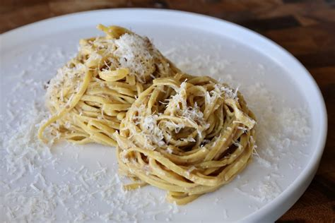

Piemonte
Panoramica
Il Piemonte è una regione del nord-ovest dell’Italia. Il nome significa “ai piedi delle montagne”, perché si trova vicino alle Alpi. Confina con la Francia e la Svizzera e ha un ricco patrimonio di paesaggi naturali, vino, cucina e industria. La capitale è Torino, ex capitale d’Italia e centro culturale e industriale.
Fatti in Breve
- Capoluogo: Torino
- Lingua/Dialetto Regionale: Piemontese (Piemontèis)
- Popolazione: Circa 4,3 milioni
- Famosa per: Barolo, Alpi, tartufi, Fiat
- Curiosità: Il movimento “Slow Food” è nato qui!
Piatti Tipici
Bagna Cauda
Tajarin

Gianduja

Tartufo Bianco
Luoghi Famosi
Mole Antonelliana
Reggia di Venaria
Langhe
Sacra di San Michele

Alpi
Quando Visitare
Il primavera (aprile–giugno) e l’autunno (settembre–ottobre) sono perfetti per visitare le colline e i vigneti. L’inverno è ideale per sciare nelle Alpi. In autunno ci sono sagre dedicate a vino e tartufo.
Simboli Regionali
- Bandiera:
- Stemma: